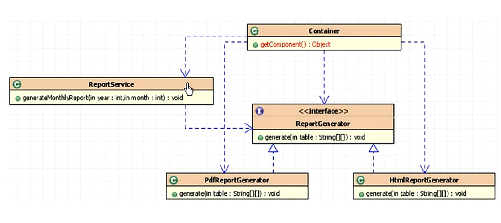

其思想是反转资源获取的方向，传统的资源查找方式要求组件向容器发起请求查找资源，作为回应，容器适时得返回
资源。而应用了IOC之后，则是容器主动地将资源推送给它所管理的组件，组件所要做的仅是选择一种合适的方式来接受
资源，这种行为也被称为查找的被动形式。
--IOC的另一种表述方式：即组件以一些预先定义好的方式（例如：setter方法）接受来自如容器的资源注入。相对
IOC而言，这种表述更直接。
IOC 容器举例：
假设有两个对象A、B满足：1
2
3
4
5
6
7
8
9class A { }
class B
{
private A a;
public void setA(A a)
{
this.a = a;
}
}
需求：从容器中获取B对象，并使B对象的a属性被赋值为容器中A对象的引用
普通容器步骤：1
2
3A a = getA();
B b = getB();
b.setA(a);
IOC容器步骤：1
B b = getB();
现有一报表生成器接口，有两个实现类（一个生成HTML,一个生成PDF)，如图
需求：生成 HTML 或 PDF 格式的不同类型的报表
特点：耦合度最高，需要知道的东西最多
特点：耦合度降低，工厂负责生成接口的实现类，代码更复杂，但是更灵活、利于扩展

特点：只要知道接口